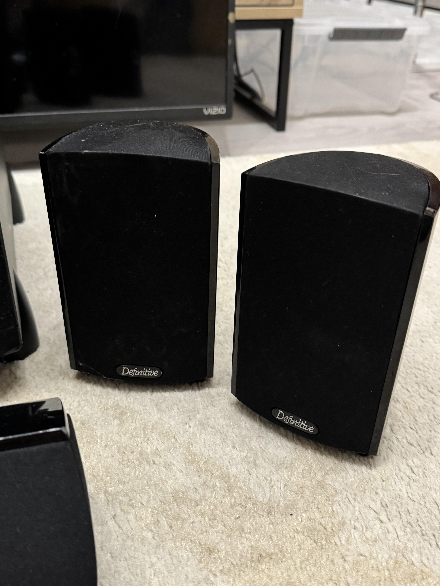
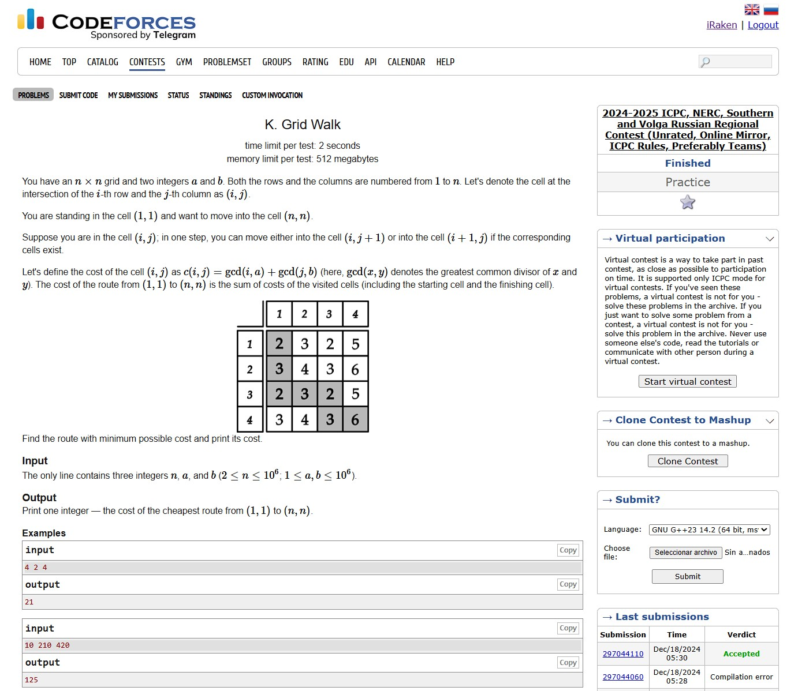
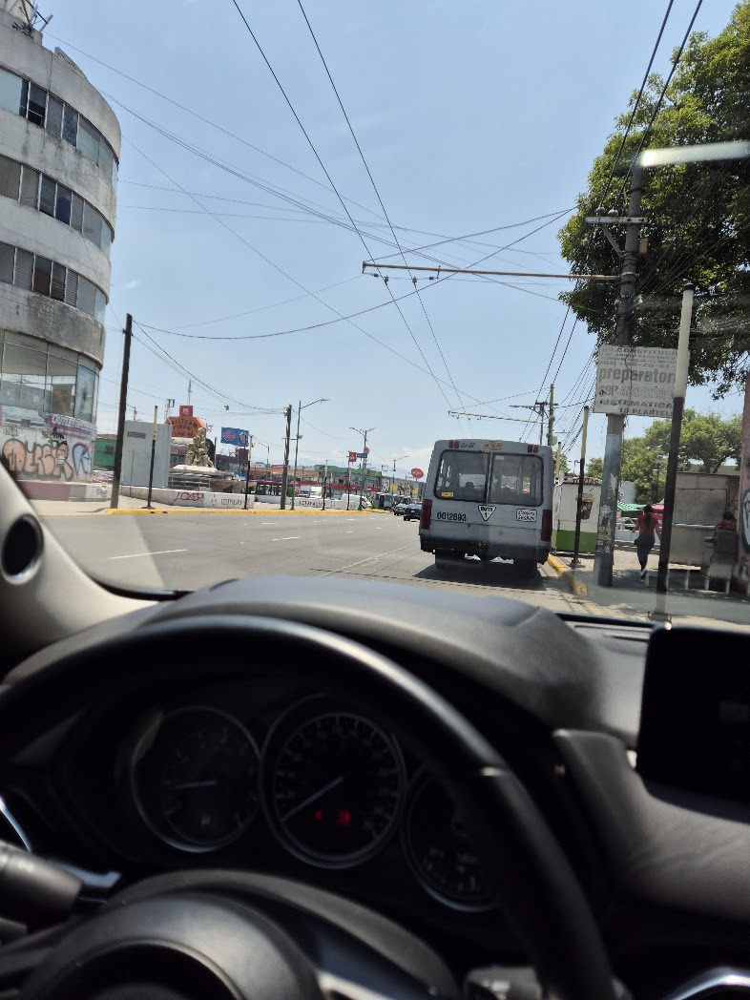
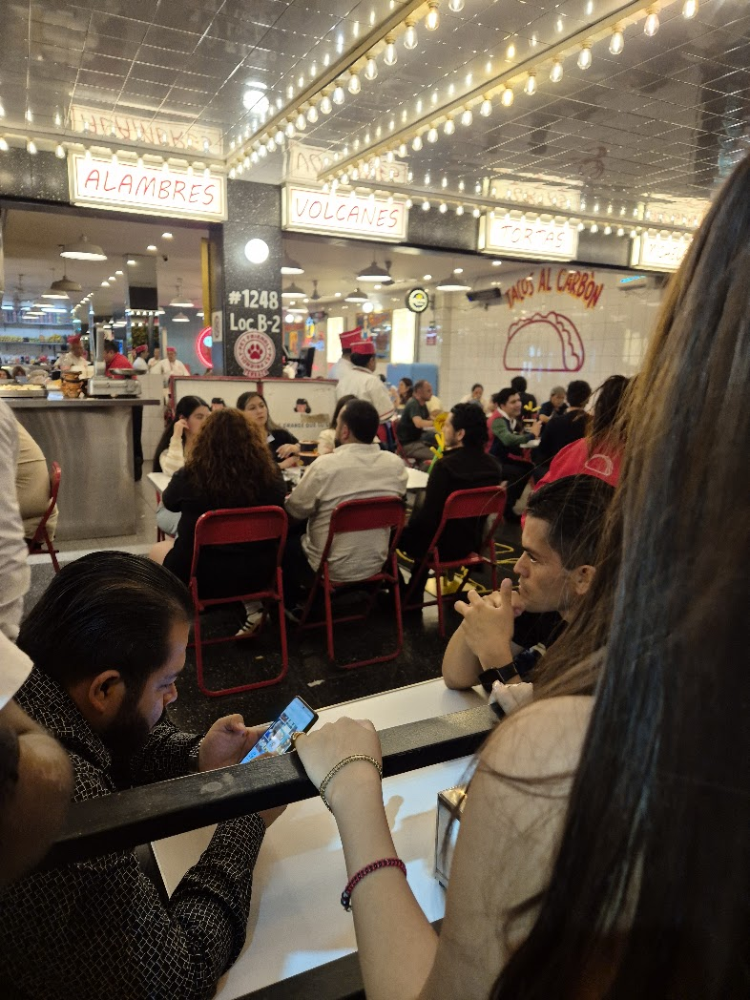
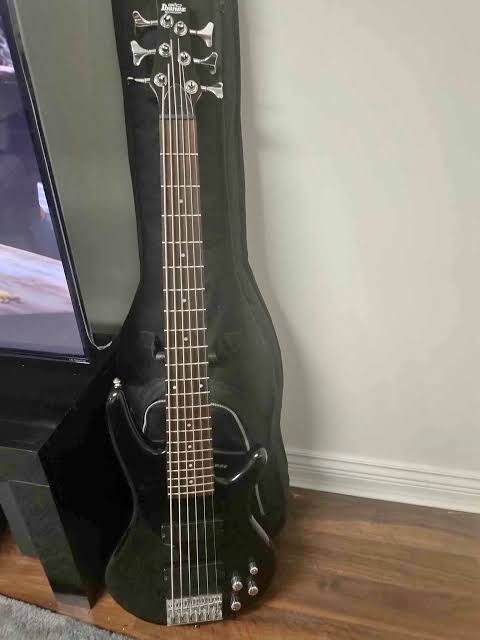
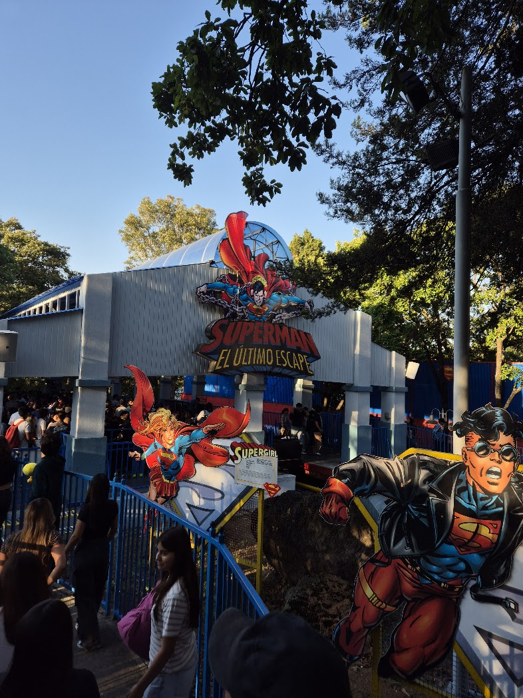

Alumno egresado del Centro de Estudios Científicos y Tecnológicos No. 7 "Cuauhtémoc" (CECyT No. 7), de la carrera de Técnico en Soldadura Industrial. Actualmente alumno de la carrera de Ingeniería en Sistemas Computacionales en la Escuela Superior de Cómputo (ESCOM).
jorgeheret128 [arroba] gmail.com






Alan Turing y la máquina Enigma: Durante la Segunda Guerra Mundial, el matemático Alan Turing lideró al equipo en Bletchley Park que logró descifrar los códigos de la máquina electromecánica Enigma, utilizada por la Alemania nazi. Su trabajo permitió automatizar el criptoanálisis, acortando significativamente la guerra y sentando las bases de la computación moderna.